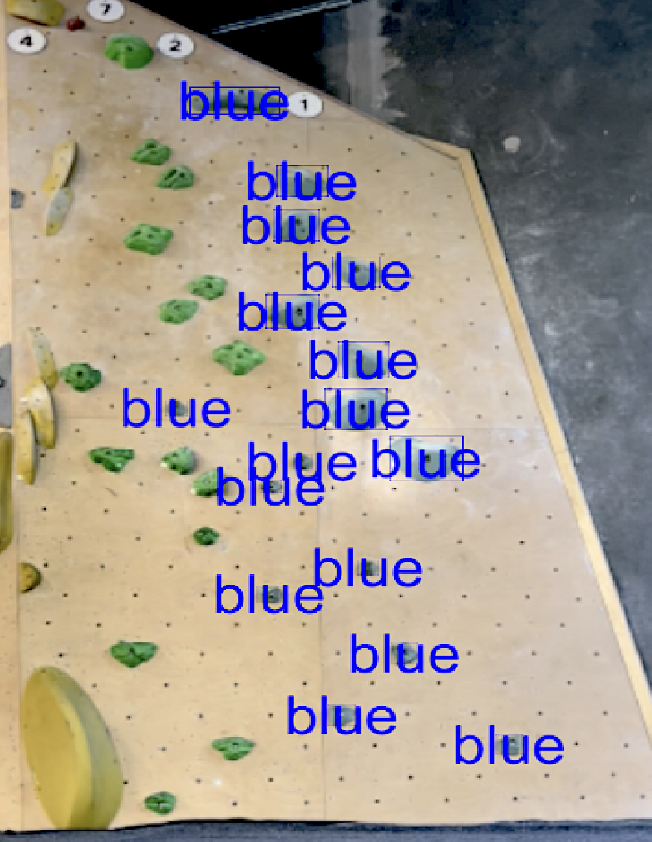
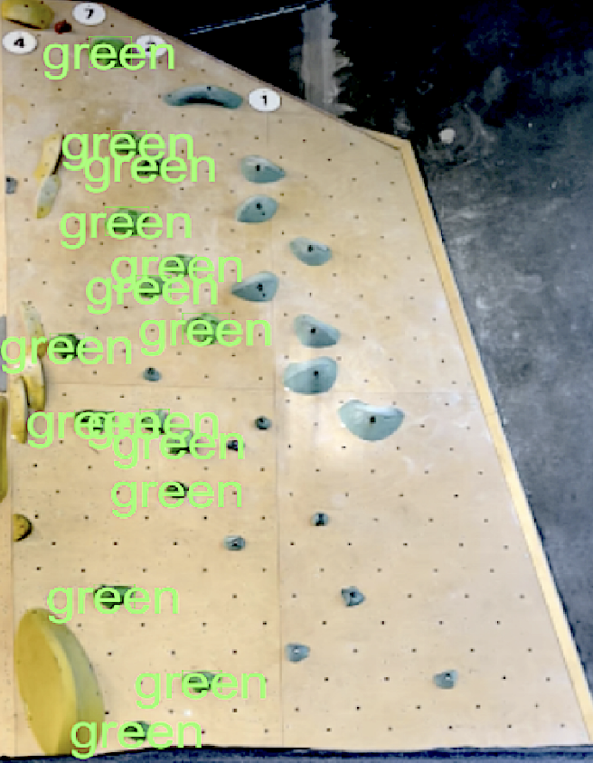

Augmenting Bouldering

This project explores how real-time computer vision can be used to create an interactive bouldering experience. By combining pose estimation and object detection, the system tracks a climber's movement and detects interactions with handholds on a climbing wall, translating these interactions into dynamic sound feedback.
A key part of the project involved training custom object detection models using a self-created dataset in Roboflow. Handholds were annotated and used to train a YOLO-based model, enabling the system to recognize and differentiate holds in a real-world climbing environment.
The system is built in Unity using machine learning models running through Unity's inference engine. Pose data and detected handholds are processed through a modular, event-driven architecture, allowing vision, interaction logic, and audio systems to operate independently.


The project focuses on bridging the gap between raw model output and meaningful interaction. This includes handling noisy predictions, occlusion, and designing logic to detect when a climber is in contact with specific holds, demonstrating both the potential and limitations of vision-based interaction in dynamic physical environments.